Last updated: 2026-11-20
Checks: 7 0
Knit directory: DXR_continue/
This reproducible R Markdown analysis was created with workflowr (version 1.7.2). The Checks tab describes the reproducibility checks that were applied when the results were created. The Past versions tab lists the development history.
Great! Since the R Markdown file has been committed to the Git repository, you know the exact version of the code that produced these results.
Great job! The global environment was empty. Objects defined in the global environment can affect the analysis in your R Markdown file in unknown ways. For reproduciblity it’s best to always run the code in an empty environment.
The command set.seed(20250701) was run prior to running
the code in the R Markdown file. Setting a seed ensures that any results
that rely on randomness, e.g. subsampling or permutations, are
reproducible.
Great job! Recording the operating system, R version, and package versions is critical for reproducibility.
Nice! There were no cached chunks for this analysis, so you can be confident that you successfully produced the results during this run.
Great job! Using relative paths to the files within your workflowr project makes it easier to run your code on other machines.
Great! You are using Git for version control. Tracking code development and connecting the code version to the results is critical for reproducibility.
The results in this page were generated with repository version e0e15f1. See the Past versions tab to see a history of the changes made to the R Markdown and HTML files.
Note that you need to be careful to ensure that all relevant files for
the analysis have been committed to Git prior to generating the results
(you can use wflow_publish or
wflow_git_commit). workflowr only checks the R Markdown
file, but you know if there are other scripts or data files that it
depends on. Below is the status of the Git repository when the results
were generated:
Ignored files:
Ignored: .Rhistory
Ignored: .Rproj.user/
Ignored: data/Bed_exports/
Ignored: data/Bed_exportsH3K27ac_summit_gr_ext200.bed
Ignored: data/Cormotif_data/
Ignored: data/DER_data/
Ignored: data/H3K27ac_LTR10E_integrant_anno.RDS
Ignored: data/H3K27ac_MER61E_integrant_anno.RDS
Ignored: data/MER61E_alignments.RDS
Ignored: data/MER61intermediatemarking_protein.RDS
Ignored: data/Other_paper_data/
Ignored: data/RDS_files/
Ignored: data/TE_annotation/
Ignored: data/alignment_summary.txt
Ignored: data/all_peak_final_dataframe.txt
Ignored: data/cell_line_info_.tsv
Ignored: data/full_p53_canonical.RDS
Ignored: data/full_summary_QC_metrics.txt
Ignored: data/hg19ToHg38.over.chain
Ignored: data/hg19ToHg38.over.chain.gz
Ignored: data/hg38_expressed_RNA_genes.bed
Ignored: data/lookup_table_andstuff.txt
Ignored: data/motif_lists/
Ignored: data/number_frag_peaks_summary.txt
Ignored: data/p53halfsite_TE_ids.RDS
Untracked files:
Untracked: H3K27ac_all_regions_test.bed
Untracked: H3K27ac_consensus_clusters_test.bed
Untracked: MER61C_ERV1_LTR.fa
Untracked: MER61E_notSet3.bed
Untracked: analysis/GREAT_H3K27ac.Rmd
Untracked: analysis/H3K27ac_ChromHMM_FC.Rmd
Untracked: analysis/H3K27ac_KZFP_motifs.Rmd
Untracked: analysis/H3K27ac_TE_investigation_200bp.Rmd
Untracked: analysis/H3K27me3_TE_investigation.Rmd
Untracked: analysis/H3K36me3_TE_investigation.Rmd
Untracked: analysis/HIstone_supp_profiles.Rmd
Untracked: analysis/Top2a_Top2b_expression.Rmd
Untracked: analysis/drill_down_KZFPs.Rmd
Untracked: analysis/maps_and_plots.Rmd
Untracked: analysis/proteomics.Rmd
Untracked: code/For_john.R
Untracked: code/RNA_gene_locations.R
Untracked: code/SOX11_excel_to_granges_coversion.R
Untracked: code/State_color_code_igv.R
Untracked: code/score_phylop.py
Untracked: hg19ToHg38.over.chain.gz
Untracked: hg38_TSS_1bp.bed
Untracked: other_analysis/
Unstaged changes:
Modified: analysis/Goanalysis_TFs.Rmd
Modified: analysis/H3K27_TE_overlap_extend.Rmd
Modified: analysis/H3K27ac_TEtype.Rmd
Modified: analysis/H3K27ac_cisRE.Rmd
Modified: analysis/MER61E_build.Rmd
Modified: analysis/Main_fig2.Rmd
Modified: analysis/computeMatrixplots.Rmd
Modified: analysis/distance_exam.Rmd
Modified: analysis/repeatmasker_data.Rmd
Modified: analysis/supp_fig.Rmd
Modified: code/corMotifcustom.R
Note that any generated files, e.g. HTML, png, CSS, etc., are not included in this status report because it is ok for generated content to have uncommitted changes.
These are the previous versions of the repository in which changes were
made to the R Markdown (analysis/MER61E_build_5.Rmd) and
HTML (docs/MER61E_build_5.html) files. If you’ve configured
a remote Git repository (see ?wflow_git_remote), click on
the hyperlinks in the table below to view the files as they were in that
past version.
| File | Version | Author | Date | Message |
|---|---|---|---|---|
| Rmd | e0e15f1 | reneeisnowhere | 2026-11-20 | wflow_publish("analysis/MER61E_build_5.Rmd") |
| html | 6145b05 | reneeisnowhere | 2026-11-18 | Build site. |
| Rmd | 24b6d02 | reneeisnowhere | 2026-11-18 | wflow_publish("analysis/MER61E_build_5.Rmd") |
library(tidyverse)
library(GenomicRanges)
library(plyranges)
library(genomation)
library(readr)
library(rtracklayer)
library(stringr)
library(ggrepel)
library(DT)
library(ComplexHeatmap)
library(circlize)
library(AnnotationDbi)
library(org.Hs.eg.db)
library(janitor)
library(MASS)
library(readxl)
library(GenomicFeatures)
library(edgeR)
library(Biostrings)
library(pwalign)
library(BSgenome.Hsapiens.UCSC.hg38)The purpose of this page is explore spacer distances for LTR10E and MER61E.
# ZNF680 narrowpeak binding Hek293 ENCFF935XZI
# ZNF680_regions <- import("data/Other_paper_data/ZNF680_CHIP_ENCFF935XZI.bed",format = "narrowPeak")
#
# ZNF780A_regions <- import("data/Other_paper_data/GSM2466657_lifted_hg38_peaks_ZNF780A.bed")
MER61E_regions <- import("data/Bed_exports/repeatmasker_sets/ERV1/MER61E_ERV1_LTR.bed")
LTR10E_regions <- import("data/Bed_exports/repeatmasker_sets/ERV1/LTR10E_ERV1_LTR.bed")
H3K27ac_summit_gr <- readRDS("data/RDS_files/H3K27ac_complete_summit_gr.RDS")
H3K27ac_summit_gr_ext <- GenomicRanges::resize(H3K27ac_summit_gr, width(H3K27ac_summit_gr)+400, fix = "center")
mcols(H3K27ac_summit_gr_ext)$name <- mcols(H3K27ac_summit_gr_ext)$Peakid
H3K27ac_ext200_anno <- readRDS("data/TE_annotation/annotated_H3K27ac_ext200_TE_overlaps.RDS")
full_p53_canonical <- readRDS("data/full_p53_canonical.RDS")
#
# p53halfsite_TE_ids <- readRDS("data/p53halfsite_TE_ids.RDS")
H3K27ac_summit_gr_ext <- keepStandardChromosomes(
H3K27ac_summit_gr_ext,
pruning.mode = "coarse")
repeatmasker_clean <- readRDS("data/RDS_files/repeatmasker_clean.RDS")
mint_anno <- readRDS("data/RDS_files/MER61E_intermediate_dataframe.RDS")
lint_anno <- readRDS("data/RDS_files/LTR10E_intermediate_dataframe.RDS")
LTR10E_ref <- readDNAStringSet(
"C:/Users/renee/Other_projects_data/DXR_data/DF000000396_LTR10E_consensus.fa")
LTR10E_rmsk <- repeatmasker_clean %>%
filter(repName == "LTR10E") %>%
dplyr::select(
genoName, genoStart, genoEnd, strand,
repName, repStart, repEnd, repLeft,
milliDiv, milliDel, milliIns,RM_id)
LTR10E_consensus <- repeatmasker_clean %>%
dplyr::filter(repName == "LTR10E") %>%
mutate(
consensus_start = if_else(
strand == "+", repStart, repLeft),
consensus_end = repEnd,
consensus_length = if_else(strand == "+",
repEnd - repLeft,
repEnd - repStart))
LTR10E_consensus %>%
summarise(n = dplyr::n(),
min_start = min(consensus_start),
max_end = max(consensus_end),
invalid = sum(consensus_start > consensus_end | consensus_start < 0,
na.rm = TRUE))# A tibble: 1 × 4
n min_start max_end invalid
<int> <dbl> <dbl> <int>
1 255 1 633 0MER61E_ref <- readDNAStringSet(
"C:/Users/renee/Other_projects_data/DXR_data/DF000000887_MER61E_consensus.fa")
MER61E_rmsk <- repeatmasker_clean %>%
filter(repName == "MER61E") %>%
dplyr::select(
genoName, genoStart, genoEnd, strand,
repName, repStart, repEnd, repLeft,
milliDiv, milliDel, milliIns)
MER61E_consensus <- repeatmasker_clean %>%
filter(repName == "MER61E") %>%
mutate(
consensus_start = if_else(
strand == "+", repStart, repLeft
),
consensus_end = repEnd,
consensus_length = if_else(
strand == "+",
repEnd - repLeft,
repEnd - repStart
)
)
MER61E_consensus %>%
summarise(
n = n(),
min_start = min(consensus_start),
max_end = max(consensus_end),
invalid = sum(
consensus_start > consensus_end |
consensus_start < 0,
na.rm = TRUE
)
)# A tibble: 1 × 4
n min_start max_end invalid
<int> <dbl> <dbl> <int>
1 267 1 820 0hg38 <- BSgenome.Hsapiens.UCSC.hg38
MER61E_sequences <- getSeq(hg38, MER61E_regions)
names(MER61E_sequences) <- MER61E_regions$name
LTR10E_sequences <- getSeq(hg38, LTR10E_regions)
names(LTR10E_sequences) <- LTR10E_regions$name
MER61E_cluster_df <- mint_anno %>% dplyr::select(repID,cluster)
LTR10E_cluster_df <- lint_anno %>% dplyr::select(repID,cluster)make_position_map <- function(aln) {
pat <- strsplit(
as.character(pwalign::alignedPattern(aln)[[1]]),
""
)[[1]]
sub <- strsplit(
as.character(pwalign::alignedSubject(aln)[[1]]),
""
)[[1]]
p_start <- as.integer(start(pattern(aln))[1])
s_start <- as.integer(start(subject(aln))[1])
p_pos <- p_start - 1L + cumsum(pat != "-")
s_pos <- s_start - 1L + cumsum(sub != "-")
tibble(
TE_position = p_pos[pat != "-" & sub != "-"],
consensus_position = s_pos[pat != "-" & sub != "-"]
)
}
make_LTR10E_position_map <- function(alignment) {
# Aligned nucleotide strings, including gaps
pat <- strsplit(
as.character(alignedPattern(alignment)),
""
)[[1]]
subj <- strsplit(
as.character(alignedSubject(alignment)),
""
)[[1]]
stopifnot(length(pat) == length(subj))
# Position counters
TE_pos <- cumsum(pat != "-")
consensus_pos <- cumsum(subj != "-")
# Obtain starting consensus position
consensus_start <- start(subject(alignment))[1]
# Construct map
tibble(
TE_position = ifelse(
pat == "-",
NA_integer_,
TE_pos
),
consensus_position = ifelse(
subj == "-",
NA_integer_,
consensus_start + consensus_pos - 1L
)
) %>%
dplyr::filter(!is.na(TE_position))
}MER61E_position_maps <- readRDS("data/RDS_files/MER61E_position_maps.RDS")
LTR10E_position_maps <- readRDS("data/RDS_files/LTR10E_position_maps.RDS")
sampleinfo <- read_delim("data/sample_info.tsv", delim = "\t")
MER61E_p53_fimo <- read_tsv(
"C:/Users/renee/Other_projects_data/DXR_data/fimo_results/MER61E_ERV1_LTR_fimo/fimo.tsv", comment = "#",
show_col_types = FALSE)
MER61E_p53_fimo_gr <- makeGRangesFromDataFrame(
MER61E_p53_fimo,
seqnames.field = "sequence_name",
start.field = "start",
end.field = "stop",
strand.field = "strand",
keep.extra.columns = TRUE
)
LTR10E_p53_fimo <- read_tsv(
"C:/Users/renee/Other_projects_data/DXR_data/fimo_results/LTR10E_ERV1_LTR_fimo/fimo.tsv", comment = "#",
show_col_types = FALSE)
LTR10E_p53_fimo_gr <- makeGRangesFromDataFrame(
LTR10E_p53_fimo,
seqnames.field = "sequence_name",
start.field = "start",
end.field = "stop",
strand.field = "strand",
keep.extra.columns = TRUE
)TE_consensus <- DNAStringSet(
c(
MER61E = as.character(MER61E_ref),
LTR10E = as.character(LTR10E_ref)
)
)
names(TE_consensus) <- c("MER61E", "LTR10E")
TE_consensusDNAStringSet object of length 2:
width seq names
[1] 569 TGAGAGAGGAGAAAGGAAGAAAC...GTGGTGCATTGGCGAGACTAACA MER61E
[2] 633 TGTAGAAAGTAAAAAGTTTCCTC...AAATAAACATTTTACTTATAACA LTR10Ep53_halfsite <- DNAString("RRRCWWGYYY")
find_p53_halfsite <- function(sequence, TE_name) {
hits <- matchPattern(
pattern = p53_halfsite,
subject = sequence,
fixed = FALSE
)
tibble(
TE_name = TE_name,
start = start(hits),
end = end(hits),
sequence = as.character(hits)
)
}
consensus_p53_canonical <- bind_rows(
find_p53_halfsite(
TE_consensus[["MER61E"]],
"MER61E"
),
find_p53_halfsite(
TE_consensus[["LTR10E"]],
"LTR10E"
)
)
consensus_p53_canonical# A tibble: 3 × 4
TE_name start end sequence
<chr> <int> <int> <chr>
1 MER61E 115 124 GGGCTTGCCT
2 MER61E 126 135 AGACATGCCC
3 MER61E 177 186 AGACATGCCCSo only MER61E contains a canonical p53 motif sequence in the consensus sequence
MER61E_p53_reference <- consensus_p53_canonical %>%
filter(TE_name == "MER61E") %>%
arrange(start) %>%
mutate(
site_ID = paste0("Site_", row_number()),
core = substr(sequence, 4, 7)
)
MER61E_p53_reference# A tibble: 3 × 6
TE_name start end sequence site_ID core
<chr> <int> <int> <chr> <chr> <chr>
1 MER61E 115 124 GGGCTTGCCT Site_1 CTTG
2 MER61E 126 135 AGACATGCCC Site_2 CATG
3 MER61E 177 186 AGACATGCCC Site_3 CATG MER61E_p53_canonical <- map_dfr(
seq_along(MER61E_sequences),
function(i) {
find_p53_halfsite(
MER61E_sequences[[i]],
names(MER61E_sequences)[i]
)
}
)
MER61E_canonical_spacing <- MER61E_p53_canonical %>%
group_by(TE_name) %>%
arrange(start, .by_group = TRUE) %>%
mutate(
n_sites = n(),
next_start = lead(start),
next_sequence = lead(sequence),
spacer_bp = next_start - end - 1
) %>%
filter(!is.na(next_start)) %>%
ungroup()
MER61E_canonical_spacing %>%
count(spacer_bp, sort = TRUE)# A tibble: 28 × 2
spacer_bp n
<dbl> <int>
1 1 52
2 41 36
3 0 12
4 31 9
5 52 7
6 45 3
7 21 2
8 34 2
9 40 2
10 42 2
# ℹ 18 more rowsMER61E_canonical_spacing <- MER61E_canonical_spacing %>%
left_join(
MER61E_cluster_df,
by = c("TE_name"="repID")
) %>%
mutate(
Response = if_else(
cluster %in% "Set_3",
"Acute",
"Non-acute"
)
)
MER61E_canonical_spacing %>%
group_by(cluster, Response) %>%
summarise(
n_TE = n_distinct(TE_name),
n_pairs = n(),
.groups = "drop"
)# A tibble: 4 × 4
cluster Response n_TE n_pairs
<chr> <chr> <int> <int>
1 NA Non-acute 46 64
2 Set_1 Non-acute 5 8
3 Set_3 Acute 33 51
4 not_assigned Non-acute 15 23MER61E_spacing_frequency <- MER61E_canonical_spacing %>%
count(Response, spacer_bp) %>%
group_by(Response) %>%
mutate(Percent = n / sum(n) * 100) %>%
ungroup()
MER61E_spacing_frequency %>%
filter(spacer_bp %in% c(0, 1, 31, 41, 52)) %>%
arrange(spacer_bp, Response) %>%
pivot_wider(
names_from = Response,
values_from = c(n, Percent),
values_fill = 0
)# A tibble: 5 × 5
spacer_bp n_Acute `n_Non-acute` Percent_Acute `Percent_Non-acute`
<dbl> <int> <int> <dbl> <dbl>
1 0 5 7 9.80 7.37
2 1 20 32 39.2 33.7
3 31 2 7 3.92 7.37
4 41 14 22 27.5 23.2
5 52 2 5 3.92 5.26ggplot(
MER61E_spacing_frequency,
aes(x = spacer_bp, y = Percent, fill = Response)
) +
geom_col(width = 0.85) +
geom_vline(
xintercept = c(1, 41),
linetype = "dashed",
color = "black"
) +
facet_wrap(~Response, ncol = 1) +
coord_cartesian(xlim = c(-2, 60)) +
scale_fill_manual(
values = c(
"Acute" = "indianred3",
"Non-acute" = "steelblue"
)
) +
labs(
title = "Canonical p53 half-site spacing in MER61E",
subtitle = "Dashed lines indicate consensus spacer lengths",
x = "p53 half-site spacer (bp)",
y = "Percentage of half-site pairs"
) +
theme_classic() +
theme(legend.position = "none")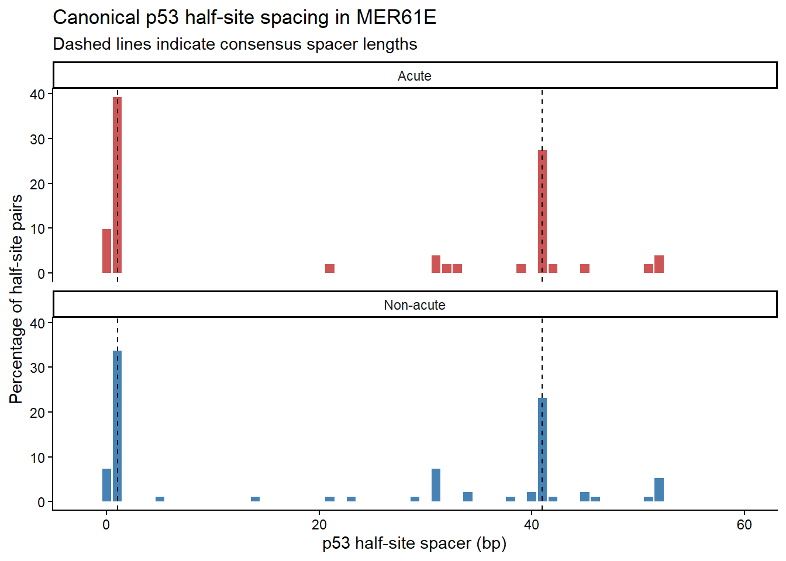
| Version | Author | Date |
|---|---|---|
| 6145b05 | reneeisnowhere | 2026-11-18 |
So MER61E acute TEs are more likely to contain multiple canonical p53 half-sites
MER61E_spacing_per_TE <- MER61E_canonical_spacing %>%
group_by(TE_name, cluster, Response) %>%
summarise(
n_pairs = n(),
mean_spacer = mean(spacer_bp),
median_spacer = median(spacer_bp),
min_spacer = min(spacer_bp),
max_spacer = max(spacer_bp),
has_0bp = any(spacer_bp == 0),
has_1bp = any(spacer_bp == 1),
has_41bp = any(spacer_bp == 41),
has_52bp = any(spacer_bp == 52),
has_0_5bp = any(spacer_bp >= 0 & spacer_bp <= 5),
has_0_1bp = any(spacer_bp >= 0 & spacer_bp <= 1),
has_0_13bp = any(dplyr::between(spacer_bp, 0, 13)),
.groups = "drop"
)
MER61E_spacing_per_TE %>%
group_by(Response) %>%
summarise(
n_TE = dplyr::n(),
Mean = mean(mean_spacer),
Median = median(mean_spacer),
SD = sd(mean_spacer),
Mean_min_spacer = mean(min_spacer),
Percent_1bp = mean(has_1bp) * 100,
Percent_41bp = mean(has_41bp) * 100,
Percent_0_13bp = mean(has_0_13bp) * 100,
.groups = "drop"
)# A tibble: 2 × 9
Response n_TE Mean Median SD Mean_min_spacer Percent_1bp Percent_41bp
<chr> <int> <dbl> <dbl> <dbl> <dbl> <dbl> <dbl>
1 Acute 33 24.8 21 19.7 14.9 60.6 42.4
2 Non-acute 66 37.6 21 48.9 28.7 48.5 33.3
# ℹ 1 more variable: Percent_0_13bp <dbl>fisher.test(
matrix(
c(33, 7,
66, 161),
nrow = 2,
byrow = TRUE,
dimnames = list(
Response = c("Acute", "Non-acute"),
Half_sites = c("Multiple", "Zero_or_one")
)
)
)
Fisher's Exact Test for Count Data
data: matrix(c(33, 7, 66, 161), nrow = 2, byrow = TRUE, dimnames = list(Response = c("Acute", "Non-acute"), Half_sites = c("Multiple", "Zero_or_one")))
p-value = 2.189e-10
alternative hypothesis: true odds ratio is not equal to 1
95 percent confidence interval:
4.654756 32.035649
sample estimates:
odds ratio
11.38298 LTR10E_p53_canonical <- map_dfr(
seq_along(LTR10E_sequences),
function(i) {
find_p53_halfsite(
LTR10E_sequences[[i]],
names(LTR10E_sequences)[i]
)
}
)
head(LTR10E_p53_canonical)# A tibble: 6 × 4
TE_name start end sequence
<chr> <int> <int> <chr>
1 chr1:3955922-3956539:4 438 447 AAACTTGCTT
2 chr1:21396461-21397061:3 227 236 AGGCATGTCC
3 chr1:21396461-21397061:3 589 598 AAACAAGCCT
4 chr1:31466685-31467319:6 217 226 GGACATGCTC
5 chr1:31466685-31467319:6 227 236 AGGCATGTCC
6 chr1:42192164-42192539:8 135 144 GAACATGCCTLTR10E_canonical_counts <- tibble(
TE_name = names(LTR10E_sequences)
) %>%
left_join(
LTR10E_p53_canonical %>%
count(TE_name, name = "n_sites"),
by = "TE_name"
) %>%
mutate(
n_sites = coalesce(n_sites, 0L)
)
LTR10E_canonical_counts %>%
count(n_sites, name = "n_TE") %>%
mutate(Percent = n_TE / sum(n_TE) * 100)# A tibble: 4 × 3
n_sites n_TE Percent
<int> <int> <dbl>
1 0 89 34.9
2 1 89 34.9
3 2 63 24.7
4 3 14 5.49LTR10E_canonical_spacing <- LTR10E_p53_canonical %>%
group_by(TE_name) %>%
arrange(start, .by_group = TRUE) %>%
mutate(
n_sites = dplyr::n(),
next_start = lead(start),
next_sequence = lead(sequence),
start_distance = next_start - start,
spacer_bp = next_start - end - 1
) %>%
filter(!is.na(next_start)) %>%
ungroup()LTR10E_canonical_spacing <- LTR10E_p53_canonical %>%
group_by(TE_name) %>%
arrange(start, .by_group = TRUE) %>%
mutate(
n_sites = n(),
next_start = lead(start),
next_sequence = lead(sequence),
start_distance = next_start - start,
spacer_bp = next_start - end - 1
) %>%
filter(!is.na(next_start)) %>%
ungroup()
LTR10E_canonical_spacing %>%
count(spacer_bp, sort = TRUE)# A tibble: 21 × 2
spacer_bp n
<dbl> <int>
1 0 17
2 2 15
3 10 15
4 53 12
5 65 11
6 63 4
7 6 2
8 62 2
9 54 1
10 66 1
# ℹ 11 more rowsLTR10E_canonical_spacing <- LTR10E_canonical_spacing %>%
left_join(
LTR10E_cluster_df %>%
dplyr::select(repID, cluster) %>%
distinct(),
by = c("TE_name" = "repID"),
relationship = "many-to-one"
) %>%
mutate(
Response = if_else(
cluster %in% "Set_3",
"Acute",
"Non-acute"
)
)
LTR10E_spacing_per_TE <- LTR10E_canonical_spacing %>%
# left_join(LTR10E_cluster_df, by=c("TE_name"="repID")) %>%
group_by(TE_name, cluster, Response) %>%
summarise(
n_pairs = dplyr::n(),
mean_spacer = mean(spacer_bp),
median_spacer = median(spacer_bp),
min_spacer = min(spacer_bp),
max_spacer = max(spacer_bp),
has_0bp = any(spacer_bp == 0),
has_2bp = any(spacer_bp == 2),
has_10bp = any(spacer_bp == 10),
has_53bp = any(spacer_bp == 53),
has_65bp = any(spacer_bp == 65),
has_0_1bp = any(dplyr::between(spacer_bp, 0, 1)),
has_0_5bp = any(dplyr::between(spacer_bp, 0, 5)),
has_0_13bp = any(dplyr::between(spacer_bp, 0, 13)),
.groups = "drop"
)
LTR10E_canonical_spacing %>%
group_by(cluster, Response) %>%
summarise(
n_TE = n_distinct(TE_name),
n_pairs = dplyr::n(),
.groups = "drop"
)# A tibble: 3 × 4
cluster Response n_TE n_pairs
<chr> <chr> <int> <int>
1 Set_1 Non-acute 1 1
2 Set_3 Acute 14 19
3 <NA> Non-acute 62 71LTR10E_spacing_per_TE <- LTR10E_canonical_spacing %>%
group_by(TE_name, cluster, Response) %>%
summarise(
n_pairs = n(),
mean_spacer = mean(spacer_bp),
median_spacer = median(spacer_bp),
min_spacer = min(spacer_bp),
max_spacer = max(spacer_bp),
has_0bp = any(spacer_bp == 0),
has_1bp = any(spacer_bp == 1),
has_41bp = any(spacer_bp == 41),
has_52bp = any(spacer_bp == 52),
has_0_1bp = any(dplyr::between(spacer_bp, 0, 1)),
has_0_5bp = any(dplyr::between(spacer_bp, 0, 5)),
has_0_13bp = any(dplyr::between(spacer_bp, 0, 13)),
.groups = "drop"
)TE_canonical_spacing <- bind_rows(
MER61E_canonical_spacing %>%
mutate(family = "MER61E"),
LTR10E_canonical_spacing %>%
mutate(family = "LTR10E")
)
TE_canonical_spacing_frequency <- TE_canonical_spacing %>%
count(family, Response, spacer_bp) %>%
group_by(family, Response) %>%
mutate(
Percent = n / sum(n) * 100
) %>%
ungroup()ggplot(
TE_canonical_spacing_frequency,
aes(
x = spacer_bp,
y = Percent,
fill = Response
)
) +
geom_col(width = 0.85) +
geom_vline(
data = data.frame(
family = "MER61E",
spacer = c(1, 41)
),
aes(xintercept = spacer),
inherit.aes = FALSE,
color = "black",
linetype = "dashed"
) +
facet_grid(Response ~ family) +
coord_cartesian(xlim = c(-2, 60)) +
scale_fill_manual(
values = c(
"Acute" = "indianred3",
"Non-acute" = "steelblue"
)
) +
labs(
title = "Canonical p53 half-site spacing",
x = "p53 half-site spacer length (bp)",
y = "Percentage of half-site pairs"
) +
theme_classic() +
theme(
legend.position = "none",
strip.background = element_blank(),
strip.text = element_text(face = "bold")
)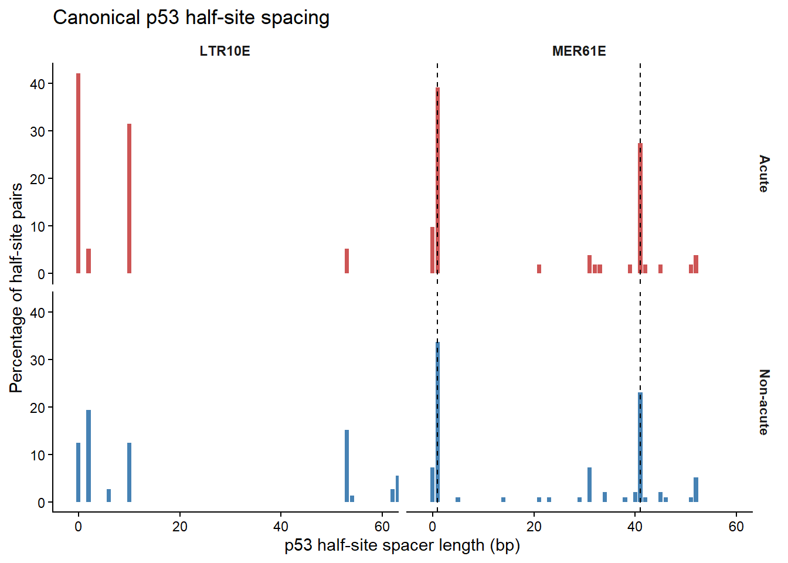
| Version | Author | Date |
|---|---|---|
| 6145b05 | reneeisnowhere | 2026-11-18 |
LTR10E_canonical_counts %>%
count(n_sites)# A tibble: 4 × 2
n_sites n
<int> <int>
1 0 89
2 1 89
3 2 63
4 3 14LTR10E_canonical_spacing %>%
count(spacer_bp, sort = TRUE)# A tibble: 21 × 2
spacer_bp n
<dbl> <int>
1 0 17
2 2 15
3 10 15
4 53 12
5 65 11
6 63 4
7 6 2
8 62 2
9 54 1
10 66 1
# ℹ 11 more rowsdim(MER61E_p53_fimo)[1] 285 10colnames(MER61E_p53_fimo) [1] "motif_id" "motif_alt_id" "sequence_name" "start"
[5] "stop" "strand" "score" "p-value"
[9] "q-value" "matched_sequence"head(MER61E_p53_fimo)# A tibble: 6 × 10
motif_id motif_alt_id sequence_name start stop strand score `p-value`
<chr> <lgl> <chr> <dbl> <dbl> <chr> <dbl> <dbl>
1 TP53_half_mot… NA chr6 1.60e7 1.60e7 + 11.2 9.54e-7
2 TP53_half_mot… NA chr7 4.65e7 4.65e7 + 11.2 9.54e-7
3 TP53_half_mot… NA chr4 6.96e7 6.96e7 + 11.2 9.54e-7
4 TP53_half_mot… NA chr14 8.38e7 8.38e7 + 11.2 9.54e-7
5 TP53_half_mot… NA chr3 1.47e8 1.47e8 + 11.2 9.54e-7
6 TP53_half_mot… NA chr2 1.64e8 1.64e8 + 11.2 9.54e-7
# ℹ 2 more variables: `q-value` <dbl>, matched_sequence <chr>dim(LTR10E_p53_fimo)[1] 211 10colnames(LTR10E_p53_fimo) [1] "motif_id" "motif_alt_id" "sequence_name" "start"
[5] "stop" "strand" "score" "p-value"
[9] "q-value" "matched_sequence"head(LTR10E_p53_fimo)# A tibble: 6 × 10
motif_id motif_alt_id sequence_name start stop strand score `p-value`
<chr> <lgl> <chr> <dbl> <dbl> <chr> <dbl> <dbl>
1 TP53_half_mot… NA chr6 8.05e7 8.05e7 + 11.2 9.54e-7
2 TP53_half_mot… NA chr12 1.04e8 1.04e8 + 11.2 9.54e-7
3 TP53_half_mot… NA chr7 1.53e8 1.53e8 + 11.2 9.54e-7
4 TP53_half_mot… NA chr10 1.31e7 1.31e7 + 11.2 2.86e-6
5 TP53_half_mot… NA chr6 3.13e7 3.13e7 + 11.2 2.86e-6
6 TP53_half_mot… NA chr11 6.22e7 6.22e7 + 11.2 2.86e-6
# ℹ 2 more variables: `q-value` <dbl>, matched_sequence <chr>get_TE_fimo_sites <- function(fimo_gr, TE_regions, family_name) {
hits <- findOverlaps(
fimo_gr,
TE_regions,
type = "within",
ignore.strand = TRUE
)
q <- queryHits(hits)
s <- subjectHits(hits)
tibble(
family = family_name,
TE_name = TE_regions$name[s],
chr = as.character(seqnames(fimo_gr))[q],
TE_start = start(TE_regions)[s],
TE_end = end(TE_regions)[s],
TE_strand = as.character(strand(TE_regions))[s],
motif_start = start(fimo_gr)[q],
motif_end = end(fimo_gr)[q],
motif_strand = as.character(strand(fimo_gr))[q]
)
}MER61E_fimo_sites <- get_TE_fimo_sites(
MER61E_p53_fimo_gr,
MER61E_regions,
"MER61E"
)
LTR10E_fimo_sites <- get_TE_fimo_sites(
LTR10E_p53_fimo_gr,
LTR10E_regions,
"LTR10E"
)
TE_fimo_sites <- bind_rows(
MER61E_fimo_sites,
LTR10E_fimo_sites
)
head(TE_fimo_sites)# A tibble: 6 × 9
family TE_name chr TE_start TE_end TE_strand motif_start motif_end
<chr> <chr> <chr> <int> <int> <chr> <int> <int>
1 MER61E chr6:16031415-16… chr6 1.60e7 1.60e7 + 16031536 16031545
2 MER61E chr7:46470946-46… chr7 4.65e7 4.65e7 + 46471406 46471415
3 MER61E chr4:69649752-69… chr4 6.96e7 6.97e7 + 69649829 69649838
4 MER61E chr14:83765264-8… chr14 8.38e7 8.38e7 + 83765555 83765564
5 MER61E chr3:146582136-1… chr3 1.47e8 1.47e8 + 146582308 146582317
6 MER61E chr2:163953194-1… chr2 1.64e8 1.64e8 + 163953566 163953575
# ℹ 1 more variable: motif_strand <chr>TE_fimo_sites <- bind_rows(
MER61E_fimo_sites,
LTR10E_fimo_sites
)
TE_fimo_sites %>%
group_by(family) %>%
summarise(
n_sites = dplyr::n(),
n_TE = n_distinct(TE_name)
)# A tibble: 2 × 3
family n_sites n_TE
<chr> <int> <int>
1 LTR10E 211 154
2 MER61E 285 156TE_fimo_sites <- TE_fimo_sites %>%
mutate(
start = if_else(
TE_strand == "+",
motif_start - TE_start + 1L,
TE_end - motif_end + 1L
),
end = if_else(
TE_strand == "+",
motif_end - TE_start + 1L,
TE_end - motif_start + 1L
),
relative_strand = if_else(
TE_strand == motif_strand,
"+", "-"
)
)TE_fimo_spacing <- TE_fimo_sites %>%
distinct(family, TE_name, start, end, .keep_all = TRUE) %>%
group_by(family, TE_name) %>%
arrange(start, .by_group = TRUE) %>%
mutate(
n_sites = n(),
next_start = lead(start),
next_end = lead(end),
start_distance = next_start - start,
spacer_bp = next_start - end - 1
) %>%
filter(!is.na(next_start)) %>%
ungroup()
TE_fimo_spacing %>%
count(family, spacer_bp, sort = TRUE) %>%
group_by(family) %>%
slice_max(n, n = 10) %>%
ungroup()# A tibble: 20 × 3
family spacer_bp n
<chr> <dbl> <int>
1 LTR10E 0 14
2 LTR10E 10 14
3 LTR10E 2 10
4 LTR10E 65 9
5 LTR10E 53 4
6 LTR10E 63 2
7 LTR10E 54 1
8 LTR10E 62 1
9 LTR10E 194 1
10 LTR10E 216 1
11 MER61E 1 41
12 MER61E 41 38
13 MER61E 0 10
14 MER61E 31 9
15 MER61E 52 7
16 MER61E 40 3
17 MER61E 34 2
18 MER61E 42 2
19 MER61E 45 2
20 MER61E 51 2TE_cluster_df <- bind_rows(
MER61E_cluster_df %>%
dplyr::select(repID, cluster) %>%
mutate(family = "MER61E"),
LTR10E_cluster_df %>%
dplyr::select(repID, cluster) %>%
mutate(family = "LTR10E")
) %>%
distinct()
TE_fimo_spacing <- TE_fimo_spacing %>%
left_join(
TE_cluster_df,
by = c("TE_name" = "repID", "family"),
relationship = "many-to-one"
) %>%
mutate(
Response = if_else(
cluster %in% "Set_3",
"Acute",
"Non-acute"
)
)TE_all_spacing <- bind_rows(
MER61E_canonical_spacing %>%
mutate(family = "MER61E",
Method = "Canonical"),
LTR10E_canonical_spacing %>%
mutate(family = "LTR10E",
Method = "Canonical"),
TE_fimo_spacing %>%
mutate(Method = "FIMO")
)TE_all_spacing %>%
group_by(family, Method, Response) %>%
summarise(
n_TE = n_distinct(TE_name),
n_pairs = n(),
.groups = "drop"
)# A tibble: 8 × 5
family Method Response n_TE n_pairs
<chr> <chr> <chr> <int> <int>
1 LTR10E Canonical Acute 14 19
2 LTR10E Canonical Non-acute 63 72
3 LTR10E FIMO Acute 13 15
4 LTR10E FIMO Non-acute 39 42
5 MER61E Canonical Acute 33 51
6 MER61E Canonical Non-acute 66 95
7 MER61E FIMO Acute 33 49
8 MER61E FIMO Non-acute 59 80TE_all_spacing_frequency <- TE_all_spacing %>%
count(family, Method, Response, spacer_bp) %>%
group_by(family, Method, Response) %>%
mutate(Percent = n / sum(n) * 100) %>%
ungroup()
ggplot(
TE_all_spacing_frequency,
aes(x = spacer_bp, y = Percent, fill = Response)
) +
geom_col(width = 0.85) +
facet_grid(Method + Response ~ family) +
coord_cartesian(xlim = c(-5, 80)) +
scale_fill_manual(
values = c(
"Acute" = "indianred3",
"Non-acute" = "steelblue"
)
) +
labs(
x = "p53 half-site spacer length (bp)",
y = "Percentage of adjacent half-site pairs"
) +
theme_classic() +
theme(
legend.position = "none",
strip.background = element_blank(),
strip.text = element_text(face = "bold")
)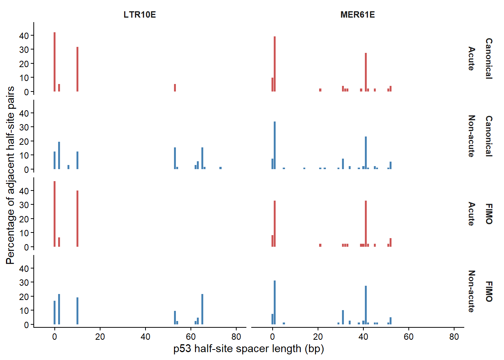
| Version | Author | Date |
|---|---|---|
| 6145b05 | reneeisnowhere | 2026-11-18 |
TE_spacing_per_TE <- TE_all_spacing %>%
group_by(family, Method, TE_name, cluster, Response) %>%
summarise(
n_pairs = dplyr::n(),
mean_spacer = mean(spacer_bp),
median_spacer = median(spacer_bp),
min_spacer = min(spacer_bp),
max_spacer = max(spacer_bp),
has_0bp = any(spacer_bp == 0),
has_1bp = any(spacer_bp == 1),
has_2bp = any(spacer_bp == 2),
has_10bp = any(spacer_bp == 10),
has_31bp = any(spacer_bp == 31),
has_41bp = any(spacer_bp == 41),
has_52bp = any(spacer_bp == 52),
has_53bp = any(spacer_bp == 53),
has_65bp = any(spacer_bp == 65),
has_0_1bp = any(dplyr::between(spacer_bp, 0, 1)),
has_0_5bp = any(dplyr::between(spacer_bp, 0, 5)),
has_0_13bp = any(dplyr::between(spacer_bp, 0, 13)),
.groups = "drop"
)TE_spacing_per_TE_long <- TE_spacing_per_TE %>%
pivot_longer(
cols = matches("^has_[0-9]+bp$"),
names_to = "Spacer",
values_to = "Present"
) %>%
mutate(
Spacer = readr::parse_number(Spacer)
) %>%
group_by(family, Method, Response, Spacer) %>%
summarise(
n_TE = dplyr::n(),
n_with_spacer = sum(Present),
Percent = mean(Present) * 100,
.groups = "drop"
)ggplot(
TE_spacing_per_TE_long,
aes(
x = factor(Spacer),
y = Percent,
fill = Response
)
) +
geom_col(position = "dodge") +
facet_grid(Method ~ family) +
scale_fill_manual(
values = c(
"Acute" = "indianred3",
"Non-acute" = "steelblue"
)
) +
labs(
x = "p53 half-site spacer length (bp)",
y = "Percentage of TEs with spacer",
fill = "Response"
) +
theme_classic()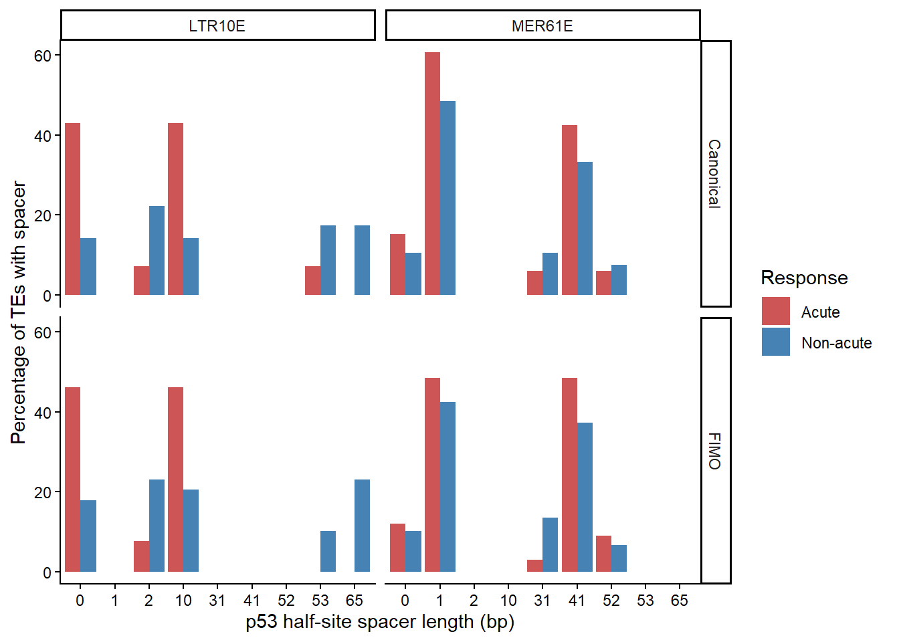
| Version | Author | Date |
|---|---|---|
| 6145b05 | reneeisnowhere | 2026-11-18 |
TE_spacing_per_TE %>%
group_by(family, Method, Response) %>%
summarise(
n_TE = dplyr::n(),
Mean_spacing = mean(mean_spacer),
SD_spacing = sd(mean_spacer),
Median_spacing = median(mean_spacer),
Mean_min_spacing = mean(min_spacer),
Median_min_spacing = median(min_spacer),
Percent_0bp = mean(has_0bp) * 100,
Percent_0_1bp = mean(has_0_1bp) * 100,
Percent_0_5bp = mean(has_0_5bp) * 100,
Percent_0_13bp = mean(has_0_13bp) * 100,
.groups = "drop"
)# A tibble: 8 × 13
family Method Response n_TE Mean_spacing SD_spacing Median_spacing
<chr> <chr> <chr> <int> <dbl> <dbl> <dbl>
1 LTR10E Canonical Acute 14 26.8 41.8 10
2 LTR10E Canonical Non-acute 63 48.2 63.9 35.5
3 LTR10E FIMO Acute 13 12.7 30.5 2
4 LTR10E FIMO Non-acute 39 29.4 32.3 10
5 MER61E Canonical Acute 33 24.8 19.7 21
6 MER61E Canonical Non-acute 66 37.6 48.9 21
7 MER61E FIMO Acute 33 28.1 17.3 21
8 MER61E FIMO Non-acute 59 36.3 47.4 23
# ℹ 6 more variables: Mean_min_spacing <dbl>, Median_min_spacing <dbl>,
# Percent_0bp <dbl>, Percent_0_1bp <dbl>, Percent_0_5bp <dbl>,
# Percent_0_13bp <dbl>TE_spacing_ttest <- TE_spacing_per_TE %>%
group_by(family, Method) %>%
group_modify(~ broom::tidy(
t.test(mean_spacer ~ Response, data = .x)
)) %>%
ungroup() %>%
mutate(p.adj = p.adjust(p.value, method = "BH"))
TE_spacing_ttest# A tibble: 4 × 13
family Method estimate estimate1 estimate2 statistic p.value parameter
<chr> <chr> <dbl> <dbl> <dbl> <dbl> <dbl> <dbl>
1 LTR10E Canonical -21.4 26.8 48.2 -1.56 0.131 28.4
2 LTR10E FIMO -16.7 12.7 29.4 -1.68 0.106 21.6
3 MER61E Canonical -12.8 24.8 37.6 -1.84 0.0684 94.0
4 MER61E FIMO -8.21 28.1 36.3 -1.20 0.235 80.7
# ℹ 5 more variables: conf.low <dbl>, conf.high <dbl>, method <chr>,
# alternative <chr>, p.adj <dbl>TE_spacing_wilcox <- TE_spacing_per_TE %>%
group_by(family, Method) %>%
group_modify(~ broom::tidy(
wilcox.test(
mean_spacer ~ Response,
data = .x,
exact = FALSE
)
)) %>%
ungroup() %>%
mutate(p.adj = p.adjust(p.value, method = "BH"))
TE_spacing_wilcox# A tibble: 4 × 7
family Method statistic p.value method alternative p.adj
<chr> <chr> <dbl> <dbl> <chr> <chr> <dbl>
1 LTR10E Canonical 321 0.112 Wilcoxon rank sum test w… two.sided 0.224
2 LTR10E FIMO 160. 0.0439 Wilcoxon rank sum test w… two.sided 0.176
3 MER61E Canonical 990 0.460 Wilcoxon rank sum test w… two.sided 0.613
4 MER61E FIMO 986. 0.925 Wilcoxon rank sum test w… two.sided 0.925TE_min_spacing_wilcox <- TE_spacing_per_TE %>%
mutate(
min_spacer = if_else(
min_spacer < 0,
NA_real_,
as.numeric(min_spacer)
)
) %>%
group_by(family, Method) %>%
group_modify(~ broom::tidy(
wilcox.test(
min_spacer ~ Response,
data = .x,
exact = FALSE
)
)) %>%
ungroup() %>%
mutate(p.adj = p.adjust(p.value, method = "BH"))
TE_min_spacing_wilcox# A tibble: 4 × 7
family Method statistic p.value method alternative p.adj
<chr> <chr> <dbl> <dbl> <chr> <chr> <dbl>
1 LTR10E Canonical 278 0.0298 Wilcoxon rank sum test … two.sided 0.0596
2 LTR10E FIMO 152. 0.0296 Wilcoxon rank sum test … two.sided 0.0596
3 MER61E Canonical 933 0.222 Wilcoxon rank sum test … two.sided 0.297
4 MER61E FIMO 911 0.599 Wilcoxon rank sum test … two.sided 0.599 TE_spacer_fisher <- TE_spacing_per_TE %>%
pivot_longer(
cols = starts_with("has_"),
names_to = "Spacer",
values_to = "Present"
) %>%
group_by(family, Method, Spacer) %>%
group_modify(~ {
tbl <- table(
factor(.x$Response,
levels = c("Acute", "Non-acute")),
factor(.x$Present,
levels = c(TRUE, FALSE))
)
result <- fisher.test(tbl)
tibble(
Acute_present = tbl[1, 1],
Acute_absent = tbl[1, 2],
Nonacute_present = tbl[2, 1],
Nonacute_absent = tbl[2, 2],
Acute_percent = tbl[1, 1] / sum(tbl[1, ]) * 100,
Nonacute_percent = tbl[2, 1] / sum(tbl[2, ]) * 100,
OR = unname(result$estimate),
CI_lower = result$conf.int[1],
CI_upper = result$conf.int[2],
p.value = result$p.value
)
}) %>%
ungroup() %>%
mutate(
p.adj = p.adjust(p.value, method = "BH"),
log2OR = log2(OR)
) %>%
arrange(p.adj)
TE_spacer_fisher# A tibble: 48 × 15
family Method Spacer Acute_present Acute_absent Nonacute_present
<chr> <chr> <chr> <int> <int> <int>
1 LTR10E Canonical has_0_13bp 13 1 34
2 LTR10E Canonical has_0_1bp 6 8 9
3 LTR10E Canonical has_0bp 6 8 9
4 LTR10E Canonical has_10bp 6 8 9
5 LTR10E FIMO has_0_13bp 13 0 24
6 LTR10E FIMO has_0_1bp 6 7 7
7 LTR10E FIMO has_0bp 6 7 7
8 LTR10E FIMO has_10bp 6 7 8
9 LTR10E FIMO has_65bp 0 13 9
10 MER61E FIMO has_31bp 1 32 8
# ℹ 38 more rows
# ℹ 9 more variables: Nonacute_absent <int>, Acute_percent <dbl>,
# Nonacute_percent <dbl>, OR <dbl>, CI_lower <dbl>, CI_upper <dbl>,
# p.value <dbl>, p.adj <dbl>, log2OR <dbl>ggplot(
TE_spacer_fisher,
aes(
x = Method,
y = Spacer,
fill = log2OR
)
) +
geom_tile(color = "white") +
geom_text(
aes(label = ifelse(p.adj < 0.05, "*", "")),
size = 6
) +
facet_wrap(~family) +
scale_fill_gradient2(
low = "steelblue",
mid = "white",
high = "indianred3",
midpoint = 0,
limits = c(-3, 3),
oob = scales::squish,
name = "log2(OR)"
) +
labs(
x = NULL,
y = "p53 half-site spacer",
title = "Enrichment of p53 half-site spacing",
subtitle = "* BH-adjusted p-value < 0.05"
) +
theme_classic()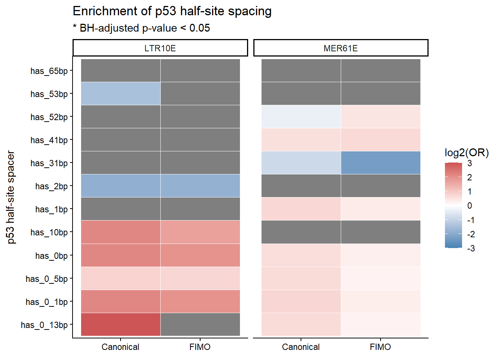
| Version | Author | Date |
|---|---|---|
| 6145b05 | reneeisnowhere | 2026-11-18 |
TE_all_copies <- bind_rows(
tibble(
TE_name = MER61E_regions$name,
family = "MER61E"
),
tibble(
TE_name = LTR10E_regions$name,
family = "LTR10E"
)
) %>%
distinct() %>%
left_join(
TE_cluster_df,
by = c("TE_name" = "repID", "family"),
relationship = "many-to-one"
) %>%
mutate(
Response = if_else(
cluster %in% "Set_3",
"Acute",
"Non-acute"
)
)TE_all_copies_spacing <- TE_all_copies %>%
tidyr::crossing(
Method = c("Canonical", "FIMO")
) %>%
left_join(
TE_spacing_per_TE %>%
dplyr::select(
family, Method, TE_name,
n_pairs, starts_with("has_")
),
by = c("family", "Method", "TE_name"),
relationship = "one-to-one"
) %>%
mutate(
n_pairs = coalesce(n_pairs, 0L),
across(
starts_with("has_"),
~ coalesce(.x, FALSE)
),
has_multiple = n_pairs > 0
)TE_spacer_fisher_2 <- TE_all_copies_spacing %>%
pivot_longer(
cols = starts_with("has_"),
names_to = "Spacer",
values_to = "Present"
) %>%
group_by(family, Method, Spacer) %>%
group_modify(~ {
tbl <- table(
factor(.x$Response,
levels = c("Acute", "Non-acute")),
factor(.x$Present,
levels = c(TRUE, FALSE))
)
result <- fisher.test(tbl)
tibble(
Acute_present = tbl[1, 1],
Acute_absent = tbl[1, 2],
Nonacute_present = tbl[2, 1],
Nonacute_absent = tbl[2, 2],
Acute_percent = tbl[1, 1] / sum(tbl[1, ]) * 100,
Nonacute_percent = tbl[2, 1] / sum(tbl[2, ]) * 100,
OR = unname(result$estimate),
CI_lower = result$conf.int[1],
CI_upper = result$conf.int[2],
p.value = result$p.value
)
}) %>%
ungroup() %>%
mutate(
p.adj = p.adjust(p.value, method = "BH"),
log2OR = log2(OR)
) %>%
arrange(p.adj)
TE_spacer_fisher_2# A tibble: 52 × 15
family Method Spacer Acute_present Acute_absent Nonacute_present
<chr> <chr> <chr> <int> <int> <int>
1 MER61E FIMO has_multiple 33 7 59
2 MER61E Canonical has_multiple 33 7 66
3 MER61E Canonical has_0_13bp 22 18 37
4 MER61E Canonical has_0_1bp 22 18 36
5 MER61E Canonical has_0_5bp 22 18 37
6 MER61E Canonical has_1bp 20 20 32
7 MER61E FIMO has_0_1bp 18 22 29
8 MER61E FIMO has_41bp 16 24 22
9 LTR10E FIMO has_0_13bp 13 15 24
10 MER61E FIMO has_0_13bp 18 22 30
# ℹ 42 more rows
# ℹ 9 more variables: Nonacute_absent <int>, Acute_percent <dbl>,
# Nonacute_percent <dbl>, OR <dbl>, CI_lower <dbl>, CI_upper <dbl>,
# p.value <dbl>, p.adj <dbl>, log2OR <dbl>ggplot(
TE_spacer_fisher_2,
aes(
x = Method,
y = Spacer,
fill = log2OR
)
) +
geom_tile(color = "white") +
geom_text(
aes(label = ifelse(p.adj < 0.05, "*", "")),
size = 6
) +
facet_wrap(~family) +
scale_fill_gradient2(
low = "steelblue",
mid = "white",
high = "indianred3",
midpoint = 0,
limits = c(-3, 3),
oob = scales::squish,
name = "log2(OR)"
) +
labs(
x = NULL,
y = "p53 half-site spacer",
title = "Enrichment of p53 half-site spacing",
subtitle = "* BH-adjusted p-value < 0.05"
) +
theme_classic()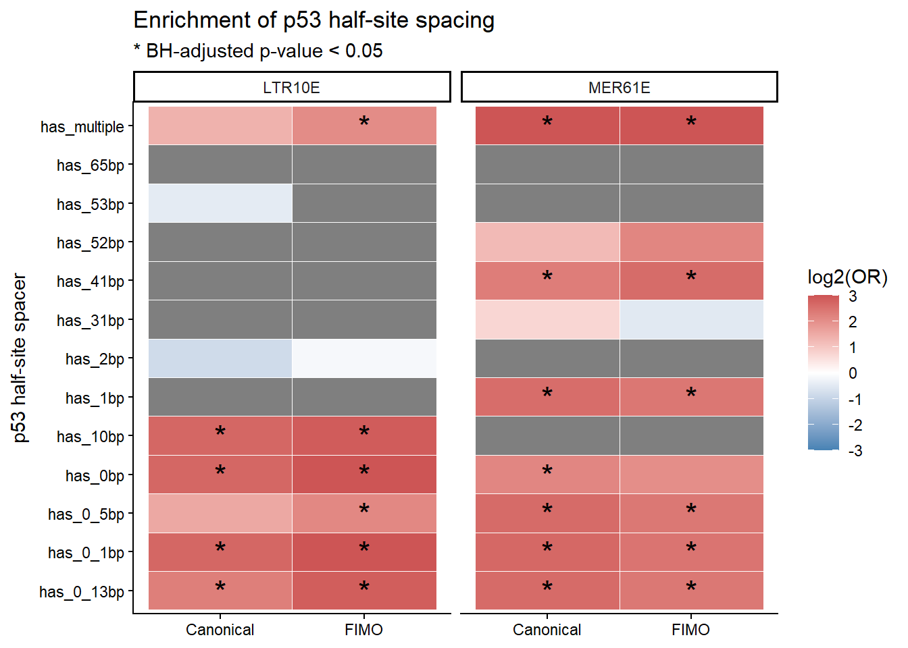
| Version | Author | Date |
|---|---|---|
| 6145b05 | reneeisnowhere | 2026-11-18 |
TE_spacer_fisher_fimo_only <- TE_spacer_fisher_2 %>% dplyr::filter(Method=="FIMO")
ggplot(
TE_spacer_fisher_fimo_only,
aes(
x = Method,
y = Spacer,
fill = log2OR
)
) +
geom_tile(color = "white") +
geom_text(
aes(label = ifelse(p.adj < 0.05, "*", "")),
size = 6
) +
facet_wrap(~family) +
scale_fill_gradient2(
low = "steelblue",
mid = "white",
high = "indianred3",
midpoint = 0,
limits = c(-3, 3),
oob = scales::squish,
name = "log2(OR)"
) +
labs(
x = NULL,
y = "p53 half-site spacer",
title = "Enrichment of p53 half-site spacing\nTransient vs Consitutive",
subtitle = "* BH-adjusted p-value < 0.05"
) +
theme_classic()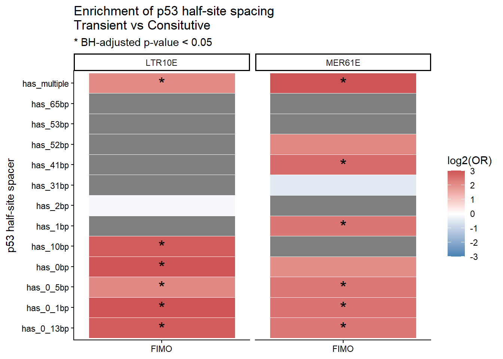
| Version | Author | Date |
|---|---|---|
| 6145b05 | reneeisnowhere | 2026-11-18 |
MER61E_1bp_pairs <- MER61E_canonical_spacing %>%
filter(spacer_bp == 1) %>%
mutate(
site1_start = start,
site1_end = end,
site2_start = next_start,
site2_end = next_start + 9L
)
dim(MER61E_1bp_pairs)[1] 52 14map_halfsite_to_consensus <- function(TE_name,
site_start,
site_end,
position_maps) {
pos_map <- position_maps[[TE_name]]
TE_pos <- seq.int(site_start, site_end)
mapped_pos <- pos_map$consensus_position[
match(TE_pos, pos_map$TE_position)
]
mapped_pos
}MER61E_1bp_mapped <- MER61E_1bp_pairs %>%
mutate(
site1_consensus = pmap(
list(TE_name, site1_start, site1_end),
~ map_halfsite_to_consensus(
..1, ..2, ..3,
MER61E_position_maps
)
),
site2_consensus = pmap(
list(TE_name, site2_start, site2_end),
~ map_halfsite_to_consensus(
..1, ..2, ..3,
MER61E_position_maps
)
)
)MER61E_1bp_mapped <- MER61E_1bp_mapped %>%
mutate(
site1_n_mapped = map_int(
site1_consensus,
~ sum(!is.na(.x))
),
site2_n_mapped = map_int(
site2_consensus,
~ sum(!is.na(.x))
),
site1_conserved = map_lgl(
site1_consensus,
~ identical(as.integer(.x), 115:124)
),
site2_conserved = map_lgl(
site2_consensus,
~ identical(as.integer(.x), 126:135)
),
ancestral_RE = site1_conserved & site2_conserved,
mapping_status = case_when(
ancestral_RE ~ "Ancestral RE",
site1_n_mapped == 10 & site2_n_mapped == 10 ~
"Fully mapped - alternative configuration",
site1_n_mapped == 0 & site2_n_mapped == 0 ~
"Unmapped",
TRUE ~ "Partially mapped"
)
)MER61E_1bp_mapped %>%
count(Response, mapping_status) %>%
group_by(Response) %>%
mutate(Percent = n / sum(n) * 100) %>%
ungroup()# A tibble: 6 × 4
Response mapping_status n Percent
<chr> <chr> <int> <dbl>
1 Acute Ancestral RE 10 50
2 Acute Fully mapped - alternative configuration 8 40
3 Acute Partially mapped 2 10
4 Non-acute Ancestral RE 11 34.4
5 Non-acute Fully mapped - alternative configuration 20 62.5
6 Non-acute Partially mapped 1 3.12ggplot(
MER61E_1bp_mapped,
aes(x = Response, fill = mapping_status)
) +
geom_bar(position = "fill") +
scale_y_continuous(labels = scales::percent) +
labs(
x = NULL,
y = "Percentage of 1 bp spacer pairs",
fill = "Mapping status",
title = "Conservation of MER61E p53 response elements"
) +
theme_classic()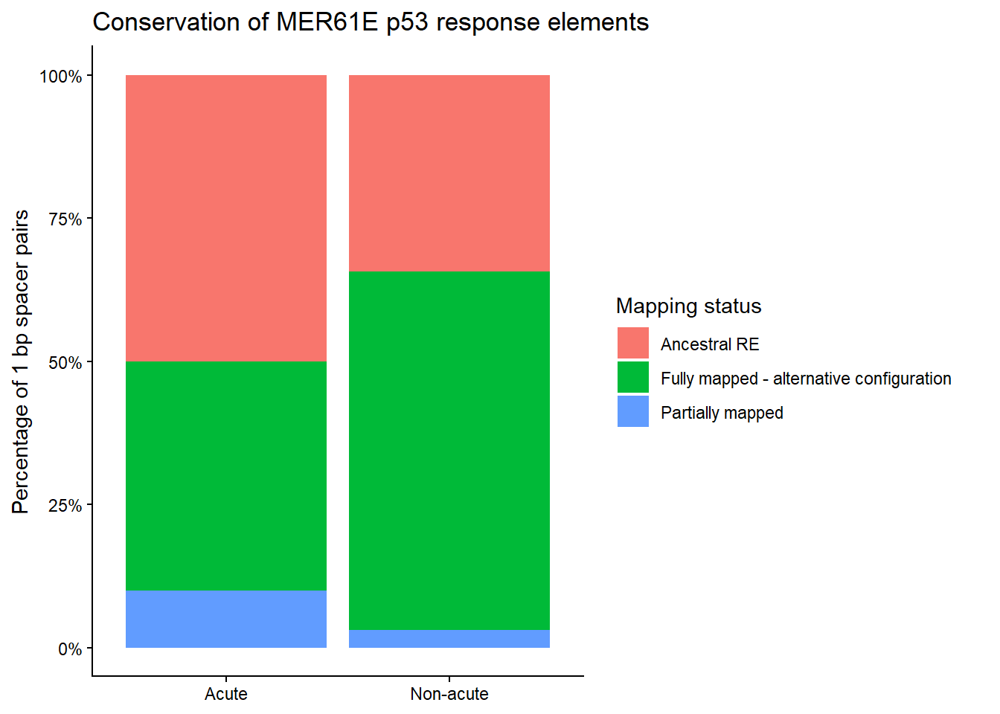
| Version | Author | Date |
|---|---|---|
| 6145b05 | reneeisnowhere | 2026-11-18 |
MER61E_ancestral_summary <- MER61E_1bp_mapped %>%
group_by(TE_name, Response) %>%
summarise(
ancestral_RE = any(ancestral_RE),
.groups = "drop"
)MER61E_ancestral_RE <- TE_all_copies %>%
filter(family == "MER61E") %>%
left_join(
MER61E_ancestral_summary %>%
dplyr::select(TE_name, ancestral_RE),
by = "TE_name"
) %>%
mutate(
ancestral_RE = coalesce(ancestral_RE, FALSE)
)
fisher.test(
table(
MER61E_ancestral_RE$Response,
MER61E_ancestral_RE$ancestral_RE
)
)
Fisher's Exact Test for Count Data
data: table(MER61E_ancestral_RE$Response, MER61E_ancestral_RE$ancestral_RE)
p-value = 0.0002001
alternative hypothesis: true odds ratio is not equal to 1
95 percent confidence interval:
0.05421589 0.44285199
sample estimates:
odds ratio
0.1545026 MER61E_ancestral_multiple <- TE_spacing_per_TE %>%
filter(
family == "MER61E",
Method == "Canonical"
) %>%
left_join(
MER61E_ancestral_summary %>%
dplyr::select(TE_name, ancestral_RE),
by = "TE_name"
) %>%
mutate(
ancestral_RE = coalesce(ancestral_RE, FALSE)
)
fisher.test(
table(
MER61E_ancestral_multiple$Response,
MER61E_ancestral_multiple$ancestral_RE
)
)
Fisher's Exact Test for Count Data
data: table(MER61E_ancestral_multiple$Response, MER61E_ancestral_multiple$ancestral_RE)
p-value = 0.1273
alternative hypothesis: true odds ratio is not equal to 1
95 percent confidence interval:
0.1539193 1.4017841
sample estimates:
odds ratio
0.4639019 fisher.test(
table(
MER61E_ancestral_summary$Response,
MER61E_ancestral_summary$ancestral_RE
)
)
Fisher's Exact Test for Count Data
data: table(MER61E_ancestral_summary$Response, MER61E_ancestral_summary$ancestral_RE)
p-value = 0.3842
alternative hypothesis: true odds ratio is not equal to 1
95 percent confidence interval:
0.1444047 1.9031948
sample estimates:
odds ratio
0.5305459 plot_TE_alignment_with_consensus <- function(alignment_blocks,
mapped_p53,
consensus_motifs,
consensus_length,
family_label) {
consensus_track <- alignment_blocks %>%
group_by(cluster) %>%
summarise(
consensus_y = max(TE_order, na.rm = TRUE) + 1,
.groups = "drop"
) %>%
mutate(
consensus_start = 1,
consensus_end = consensus_length,
track_label = paste0(family_label, " consensus")
)
consensus_motifs_plot <- consensus_track %>%
select(cluster, consensus_y) %>%
tidyr::crossing(consensus_motifs) %>%
mutate(y = consensus_y)
ggplot() +
geom_segment(
data = alignment_blocks,
aes(
x = consensus_start,
xend = consensus_end,
y = TE_order,
yend = TE_order,
color = cluster
),
linewidth = 1.2,
lineend = "butt"
) +
geom_segment(
data = mapped_p53,
aes(
x = consensus_start,
xend = consensus_end,
y = TE_order,
yend = TE_order
),
linewidth = 2.2,
color = "firebrick"
) +
geom_segment(
data = consensus_track,
aes(
x = consensus_start,
xend = consensus_end,
y = consensus_y,
yend = consensus_y
),
linewidth = 1.5,
color = "black"
) +
geom_rect(
data = consensus_motifs_plot,
aes(
xmin = start,
xmax = end,
ymin = y - 0.25,
ymax = y + 0.25
),
fill = "goldenrod2",
color = "black",
alpha = 0.8
) +
geom_text(
data = consensus_track,
aes(
x = consensus_start,
y = consensus_y,
label = track_label
),
hjust = 1.05,
size = 3.2
) +
geom_text(
data = consensus_motifs_plot,
aes(
x = (start + end) / 2,
y = y + 0.45,
label = sequence
),
size = 2.8
) +
facet_wrap(~cluster, scales = "free_y") +
theme_classic() +
labs(
x = "Consensus position",
y = NULL,
title = paste0(family_label, " alignments with consensus p53 motifs")
)
}get_alignment_blocks <- function(position_maps) {
imap_dfr(position_maps, function(pos_map, TE_name) {
pos_map %>%
filter(
!is.na(TE_position),
!is.na(consensus_position)
) %>%
arrange(TE_position) %>%
mutate(
new_block =
TE_position - lag(TE_position, default = -1L) != 1 |
consensus_position -
lag(consensus_position, default = -1L) != 1,
block_ID = cumsum(new_block)
) %>%
group_by(block_ID) %>%
summarise(
TE_start = min(TE_position),
TE_end = max(TE_position),
consensus_start = min(consensus_position),
consensus_end = max(consensus_position),
block_width = dplyr::n(),
.groups = "drop"
) %>%
mutate(TE_name = TE_name)
})
}MER61E_alignment_blocks <- get_alignment_blocks(
MER61E_position_maps
)
LTR10E_alignment_blocks <- get_alignment_blocks(
LTR10E_position_maps
)
cluster_levels <- c(
"Set_3",
"Set_1",
"not_assigned",
"NA"
)
cluster_colors <- c(
"Set_3" = "indianred3",
"Set_1" = "steelblue",
"not_assigned" = "darkseagreen3",
"NA" = "grey70"
)TE_alignment_blocks <- bind_rows(
MER61E_alignment_blocks %>%
mutate(family = "MER61E"),
LTR10E_alignment_blocks %>%
mutate(family = "LTR10E")
) %>%
left_join(
TE_cluster_df,
by = c("TE_name" = "repID", "family"),
relationship = "many-to-one"
) %>%
mutate(
Response = if_else(
cluster %in% "Set_3",
"Acute",
"Non-acute"
)
)TE_alignment_blocks <- TE_alignment_blocks %>%
dplyr::select(-any_of(c("TE_order", "aligned_width", "milliDiv"))) %>%
left_join(
(repeatmasker_clean %>%
dplyr::select(RM_id, milliDiv) %>%
distinct()),
by = c("TE_name" = "RM_id"),
relationship = "many-to-one"
)
TE_alignment_blocks <- TE_alignment_blocks %>%
mutate(
cluster = coalesce(as.character(cluster), "NA"),
cluster = factor(cluster, levels = cluster_levels)
)
TE_plot_order <- TE_alignment_blocks %>%
group_by(family, cluster, TE_name, milliDiv) %>%
summarise(
aligned_width = sum(block_width),
.groups = "drop"
) %>%
group_by(family, cluster) %>%
arrange(
desc(is.na(milliDiv)),
desc(milliDiv),
desc(aligned_width),
TE_name,
.by_group = TRUE
) %>%
mutate(
TE_order = row_number()
) %>%
ungroup()
TE_alignment_blocks <- TE_alignment_blocks %>%
dplyr::select(-any_of(c("TE_order", "aligned_width"))) %>%
left_join(
TE_plot_order %>%
dplyr::select(
family, cluster, TE_name,
TE_order, aligned_width
),
by = c("family", "cluster", "TE_name"),
relationship = "many-to-one"
)TE_consensus_lengths <- tibble(
family = names(TE_consensus),
consensus_length = width(TE_consensus)
)
TE_consensus_tracks <- TE_plot_order %>%
group_by(family, cluster) %>%
summarise(
consensus_y = max(TE_order) + 2,
.groups = "drop"
) %>%
left_join(
TE_consensus_lengths,
by = "family"
) %>%
mutate(
consensus_start = 1,
consensus_end = consensus_length
)
TE_consensus_motif_tracks <- TE_consensus_tracks %>%
inner_join(
consensus_p53_canonical %>%
dplyr::rename(family = TE_name),
by = "family",
relationship = "many-to-many"
)TE_alignment_plot <- ggplot() +
# Individual TE alignment blocks
geom_segment(
data = TE_alignment_blocks,
aes(
x = consensus_start - 0.5,
xend = consensus_end + 0.5,
y = TE_order,
yend = TE_order,
color = cluster
),
linewidth = 0.8,
lineend = "butt"
) +
# Consensus backbone
geom_segment(
data = TE_consensus_tracks,
aes(
x = consensus_start - 0.5,
xend = consensus_end + 0.5,
y = consensus_y,
yend = consensus_y
),
linewidth = 1.8,
color = "black",
lineend = "butt"
) +
# Canonical p53 half-sites within consensus
geom_segment(
data = TE_consensus_motif_tracks,
aes(
x = start - 0.5,
xend = end + 0.5,
y = consensus_y,
yend = consensus_y
),
linewidth = 2.5,
color = "goldenrod2",
lineend = "butt"
) +
facet_grid(
cluster ~ family,
scales = "free_y",
space = "free_y"
) +
scale_y_reverse() +
scale_color_manual(
values = cluster_colors
) +
labs(
x = "Consensus position (bp)",
y = "TE copies"
) +
theme_classic() +
theme(
axis.text.y = element_blank(),
axis.ticks.y = element_blank(),
legend.position = "none",
strip.background = element_blank(),
strip.text = element_text(face = "bold")
)
TE_alignment_plot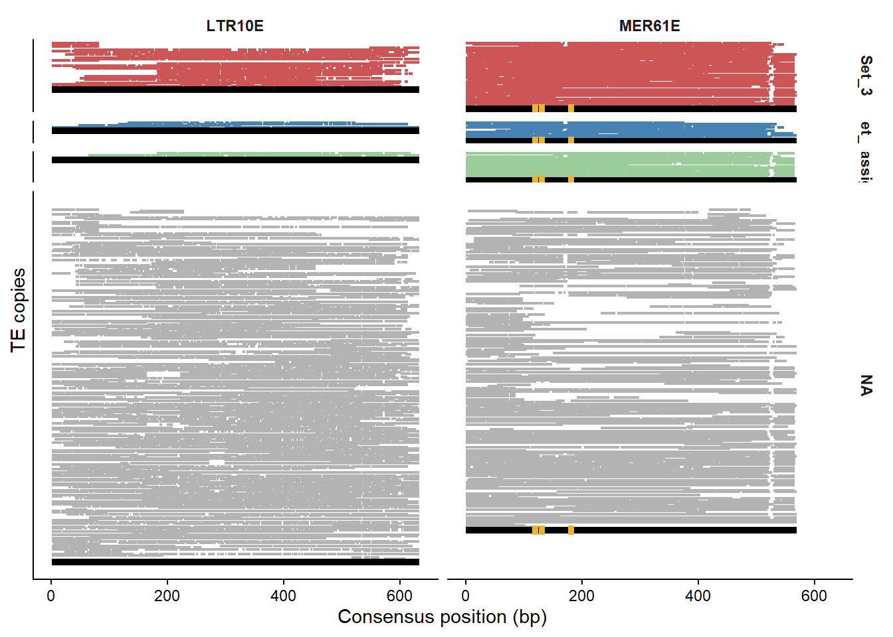
| Version | Author | Date |
|---|---|---|
| 6145b05 | reneeisnowhere | 2026-11-18 |
map_fimo_to_consensus <- function(fimo_sites,
position_maps) {
fimo_sites %>%
mutate(
consensus_positions = pmap(
list(TE_name, start, end),
function(TE_name, start, end) {
pos_map <- position_maps[[TE_name]]
if (is.null(pos_map)) {
return(rep(NA_integer_, end - start + 1L))
}
pos_map$consensus_position[
match(
seq.int(start, end),
pos_map$TE_position
)
]
}
)
) %>%
mutate(
n_mapped = map_int(
consensus_positions,
~ sum(!is.na(.x))
),
motif_width = end - start + 1L,
contiguous = map_lgl(
consensus_positions,
~ !anyNA(.x) && all(diff(.x) == 1)
),
mapping_status = case_when(
n_mapped == 0 ~ "Not mapped",
n_mapped < motif_width ~ "Partially mapped",
contiguous ~ "Fully aligned - no gap",
TRUE ~ "Fully aligned - with gap"
)
)
}MER61E_fimo_mapped <- map_fimo_to_consensus(
TE_fimo_sites %>%
filter(family == "MER61E"),
MER61E_position_maps
)
LTR10E_fimo_mapped <- map_fimo_to_consensus(
TE_fimo_sites %>%
filter(family == "LTR10E"),
LTR10E_position_maps
)
TE_fimo_mapped <- bind_rows(
MER61E_fimo_mapped,
LTR10E_fimo_mapped
)TE_fimo_mapped_blocks <- TE_fimo_mapped %>%
mutate(motif_ID = row_number()) %>%
dplyr::filter(n_mapped > 0) %>%
tidyr::unnest_longer(
consensus_positions,
indices_to = "motif_position"
) %>%
dplyr::filter(!is.na(consensus_positions)) %>%
group_by(family, TE_name, motif_ID, mapping_status) %>%
arrange(motif_position, .by_group = TRUE) %>%
mutate(
new_block =
row_number() == 1 |
motif_position -
lag(motif_position, default = -1L) != 1 |
consensus_positions -
lag(consensus_positions, default = -1L) != 1,
block_ID = cumsum(new_block)
) %>%
group_by(
family, TE_name, motif_ID,
mapping_status, block_ID
) %>%
summarise(
consensus_start = min(consensus_positions),
consensus_end = max(consensus_positions),
.groups = "drop"
)
TE_fimo_mapped_blocks <- TE_fimo_mapped_blocks %>%
dplyr::select(
-any_of(c(
"TE_order", "TE_order.x", "TE_order.y",
"cluster", "cluster.x", "cluster.y",
"milliDiv", "milliDiv.x", "milliDiv.y"
))
) %>%
left_join(
TE_plot_order %>%
dplyr::select(
family,
TE_name,
cluster,
TE_order,
milliDiv
) %>%
distinct(),
by = c("family", "TE_name"),
relationship = "many-to-one"
)
TE_fimo_mapped_blocks %>%
summarise(
n_blocks = dplyr::n(),
missing_TE_order = sum(is.na(TE_plot_order))
)# A tibble: 1 × 2
n_blocks missing_TE_order
<int> <int>
1 620 0p53_mapping_colors <- c(
"Fully aligned - no gap" = "black",
"Fully aligned - with gap" = "darkorange2",
"Partially mapped" = "purple3"
)
TE_alignment_plot <- ggplot() +
# Individual TE alignment blocks
geom_segment(
data = TE_alignment_blocks,
aes(
x = consensus_start - 0.5,
xend = consensus_end + 0.5,
y = TE_order,
yend = TE_order,
color = cluster
),
linewidth = 0.8,
lineend = "butt"
) +
scale_color_manual(
values = cluster_colors,
name = "Cluster"
) +
# Introduce a separate color scale for p53
ggnewscale::new_scale_color() +
# FIMO-predicted p53 half-sites
geom_segment(
data = TE_fimo_mapped_blocks,
aes(
x = consensus_start - 0.5,
xend = consensus_end + 0.5,
y = TE_order,
yend = TE_order,
color = mapping_status
),
linewidth = 1.5,
lineend = "butt"
) +
scale_color_manual(
values = p53_mapping_colors,
name = "p53 half-site mapping"
) +
# Consensus backbone
geom_segment(
data = TE_consensus_tracks,
aes(
x = consensus_start - 0.5,
xend = consensus_end + 0.5,
y = consensus_y,
yend = consensus_y
),
linewidth = 1.8,
color = "black",
lineend = "butt"
) +
# Canonical p53 half-sites in consensus
geom_segment(
data = TE_consensus_motif_tracks,
aes(
x = start - 0.5,
xend = end + 0.5,
y = consensus_y,
yend = consensus_y
),
linewidth = 2.5,
color = "goldenrod2",
lineend = "butt"
) +
facet_grid(
cluster ~ family,
scales = "free_y",
space = "free_y"
) +
scale_y_reverse() +
labs(
x = "Consensus position (bp)",
y = "TE copies"
) +
theme_classic() +
theme(
axis.text.y = element_blank(),
axis.ticks.y = element_blank(),
strip.background = element_blank(),
strip.text = element_text(face = "bold"),
legend.position = "bottom",
legend.box = "vertical"
)
TE_alignment_plot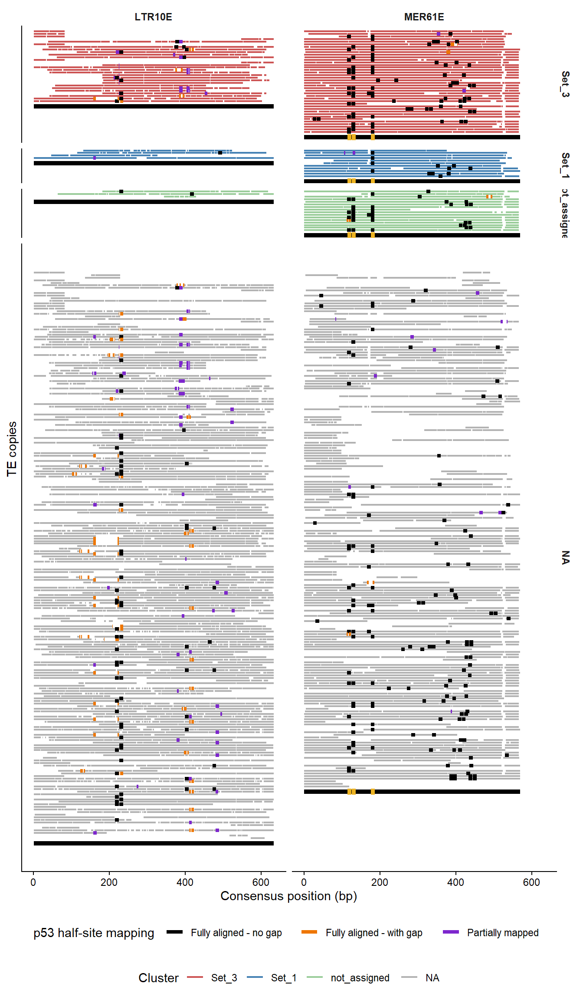
| Version | Author | Date |
|---|---|---|
| 6145b05 | reneeisnowhere | 2026-11-18 |
writeXStringSet(
TE_consensus,
filepath = "data/Bed_exports/MER61E_LTR10E_consensus.fa"
)TE_lengths <- bind_rows(
tibble(
family = "MER61E",
TE_name = MER61E_regions$name,
TE_width = width(MER61E_regions)
),
tibble(
family = "LTR10E",
TE_name = LTR10E_regions$name,
TE_width = width(LTR10E_regions)
)
)TE_alignment_coverage <- TE_alignment_blocks %>%
group_by(family, TE_name) %>%
summarise(
aligned_width = sum(block_width),
.groups = "drop"
) %>%
left_join(
TE_lengths,
by = c("family", "TE_name")
) %>%
left_join(
TE_consensus_lengths,
by = "family"
) %>%
mutate(
pct_TE_coverage =
aligned_width / TE_width * 100,
pct_consensus_coverage =
aligned_width / consensus_length * 100
)distribution check
TE_alignment_coverage %>%
group_by(family) %>%
summarise(
n_TE = dplyr::n(),
mean_TE_coverage = mean(pct_TE_coverage),
median_TE_coverage = median(pct_TE_coverage),
mean_consensus_coverage = mean(pct_consensus_coverage),
median_consensus_coverage = median(pct_consensus_coverage),
.groups = "drop"
)# A tibble: 2 × 6
family n_TE mean_TE_coverage median_TE_coverage mean_consensus_coverage
<chr> <int> <dbl> <dbl> <dbl>
1 LTR10E 255 93.1 94.2 62.3
2 MER61E 267 93.8 97.4 63.7
# ℹ 1 more variable: median_consensus_coverage <dbl>TE_plot_order_percentTE <- TE_alignment_blocks %>%
dplyr::select(
family, cluster, TE_name, milliDiv
) %>%
distinct() %>%
left_join(
TE_alignment_coverage,
by = c("family", "TE_name"),
relationship = "one-to-one"
) %>%
group_by(family, cluster) %>%
arrange(
desc(is.na(pct_TE_coverage)),
pct_TE_coverage,
desc(milliDiv),
TE_name,
.by_group = TRUE
) %>%
mutate(
TE_order = row_number()
) %>%
ungroup()update alignment blocks
TE_alignment_blocks_pct <- TE_alignment_blocks %>%
dplyr::select(
-any_of(c("TE_order", "aligned_width"))
) %>%
left_join(
TE_plot_order_percentTE %>%
dplyr::select(
family, TE_name, TE_order, aligned_width
),
by = c("family", "TE_name"),
relationship = "many-to-one"
)
TE_fimo_mapped_blocks_pct <- TE_fimo_mapped_blocks %>%
dplyr::select(-any_of(c("TE_order", "cluster"))) %>%
left_join(
TE_plot_order_percentTE %>%
dplyr::select(
family, TE_name, cluster, TE_order
),
by = c("family", "TE_name"),
relationship = "many-to-one"
)TE_alignment_plot_per <- ggplot() +
# Individual TE alignment blocks
geom_segment(
data = TE_alignment_blocks_pct,
aes(
x = consensus_start - 0.5,
xend = consensus_end + 0.5,
y = TE_order,
yend = TE_order,
color = cluster
),
linewidth = 0.8,
lineend = "butt"
) +
scale_color_manual(
values = cluster_colors,
name = "Cluster"
) +
# Introduce a separate color scale for p53
ggnewscale::new_scale_color() +
# FIMO-predicted p53 half-sites
geom_segment(
data = TE_fimo_mapped_blocks_pct,
aes(
x = consensus_start - 0.5,
xend = consensus_end + 0.5,
y = TE_order,
yend = TE_order,
color = mapping_status
),
linewidth = 1.5,
lineend = "butt"
) +
scale_color_manual(
values = p53_mapping_colors,
name = "p53 half-site mapping"
) +
# Consensus backbone
geom_segment(
data = TE_consensus_tracks,
aes(
x = consensus_start - 0.5,
xend = consensus_end + 0.5,
y = consensus_y,
yend = consensus_y
),
linewidth = 1.8,
color = "black",
lineend = "butt"
) +
# Canonical p53 half-sites in consensus
geom_segment(
data = TE_consensus_motif_tracks,
aes(
x = start - 0.5,
xend = end + 0.5,
y = consensus_y,
yend = consensus_y
),
linewidth = 2.5,
color = "goldenrod2",
lineend = "butt"
) +
facet_grid(
cluster ~ family,
scales = "free_y",
space = "free_y"
) +
scale_y_reverse() +
labs(
x = "Consensus position (bp)",
y = "TE copies"
) +
theme_classic() +
theme(
axis.text.y = element_blank(),
axis.ticks.y = element_blank(),
strip.background = element_blank(),
strip.text = element_text(face = "bold"),
legend.position = "bottom",
legend.box = "vertical"
)
TE_alignment_plot_per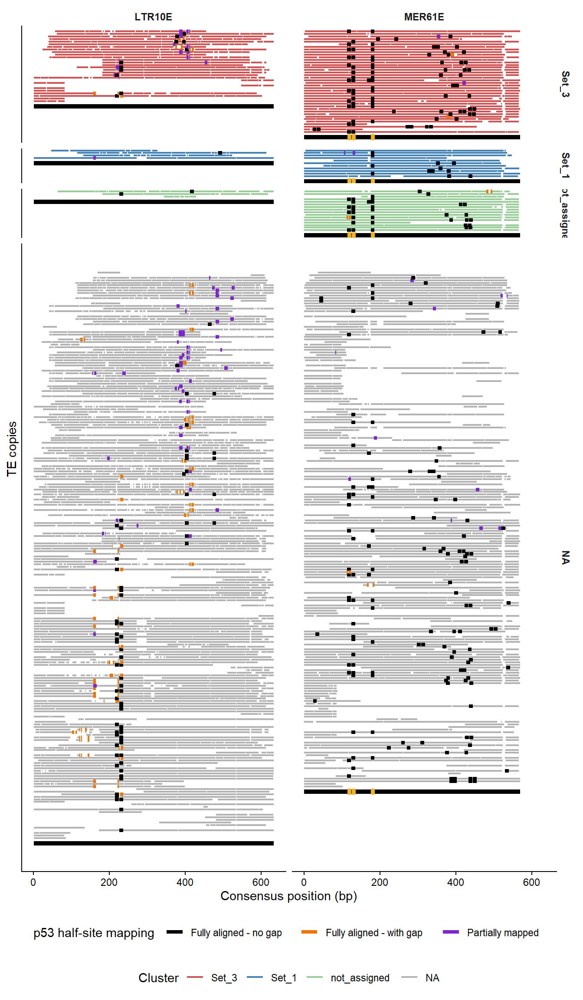
| Version | Author | Date |
|---|---|---|
| 6145b05 | reneeisnowhere | 2026-11-18 |
TE_plot_order_percentTE %>%
group_by(family, cluster) %>%
arrange(TE_order, .by_group = TRUE) %>%
summarise(
n_TE = dplyr::n(),
Top_coverage = dplyr::first(pct_TE_coverage),
Bottom_coverage = last(pct_TE_coverage),
Mean_coverage = mean(pct_TE_coverage),
Median_coverage = median(pct_TE_coverage),
missing_coverage = sum(is.na(pct_TE_coverage)),
.groups = "drop"
)# A tibble: 8 × 8
family cluster n_TE Top_coverage Bottom_coverage Mean_coverage
<chr> <fct> <int> <dbl> <dbl> <dbl>
1 LTR10E Set_3 28 84.7 100 92.5
2 LTR10E Set_1 4 81.8 97.9 88.4
3 LTR10E not_assigned 3 86.3 95.1 91.1
4 LTR10E NA 220 74.1 100 93.3
5 MER61E Set_3 40 57.9 100 95.9
6 MER61E Set_1 11 72.1 99.8 88.8
7 MER61E not_assigned 16 77.4 100 95.8
8 MER61E NA 200 65.4 100 93.5
# ℹ 2 more variables: Median_coverage <dbl>, missing_coverage <int>TE_order_comparison <- TE_alignment_blocks %>%
dplyr::select(family, cluster, TE_name, TE_order) %>%
distinct() %>%
dplyr::rename(order_milliDiv = TE_order) %>%
left_join(
TE_alignment_blocks_pct %>%
dplyr::select(family, cluster, TE_name, TE_order) %>%
distinct() %>%
dplyr::rename(order_pct = TE_order),
by = c("family", "cluster", "TE_name"),
relationship = "one-to-one"
) %>%
mutate(
order_difference = order_pct - order_milliDiv,
order_changed = order_milliDiv != order_pct
)
TE_order_comparison %>%
group_by(family, cluster) %>%
summarise(
n_TE = dplyr::n(),
n_changed = sum(order_changed),
Percent_changed = mean(order_changed) * 100,
Mean_position_change = mean(abs(order_difference)),
Max_position_change = max(abs(order_difference)),
.groups = "drop"
)# A tibble: 8 × 7
family cluster n_TE n_changed Percent_changed Mean_position_change
<chr> <fct> <int> <int> <dbl> <dbl>
1 LTR10E Set_3 28 27 96.4 9.57
2 LTR10E Set_1 4 2 50 1
3 LTR10E not_assigned 3 2 66.7 0.667
4 LTR10E NA 220 218 99.1 68.3
5 MER61E Set_3 40 39 97.5 8.9
6 MER61E Set_1 11 9 81.8 1.45
7 MER61E not_assigned 16 14 87.5 3.12
8 MER61E NA 200 197 98.5 34.2
# ℹ 1 more variable: Max_position_change <int>TE_plot_order_percentTE %>%
group_by(family, cluster) %>%
arrange(TE_order, .by_group = TRUE) %>%
summarise(
n_TE = dplyr::n(),
n_unique_pct = n_distinct(pct_TE_coverage),
top_pct = dplyr::first(pct_TE_coverage),
bottom_pct = dplyr::last(pct_TE_coverage),
correctly_ordered = all(diff(pct_TE_coverage) >= 0),
.groups = "drop"
)# A tibble: 8 × 7
family cluster n_TE n_unique_pct top_pct bottom_pct correctly_ordered
<chr> <fct> <int> <int> <dbl> <dbl> <lgl>
1 LTR10E Set_3 28 24 84.7 100 TRUE
2 LTR10E Set_1 4 4 81.8 97.9 TRUE
3 LTR10E not_assigned 3 3 86.3 95.1 TRUE
4 LTR10E NA 220 195 74.1 100 TRUE
5 MER61E Set_3 40 34 57.9 100 TRUE
6 MER61E Set_1 11 11 72.1 99.8 TRUE
7 MER61E not_assigned 16 11 77.4 100 TRUE
8 MER61E NA 200 158 65.4 100 TRUE TE_plot_order_percentTE %>%
group_by(family, cluster) %>%
slice_max(TE_order, n = 5) %>%
dplyr::select(
family,
cluster,
TE_name,
TE_order,
TE_width,
aligned_width,
consensus_length,
pct_TE_coverage,
pct_consensus_coverage,
milliDiv
) %>%
arrange(family, cluster, desc(TE_order)) %>%
ungroup()# A tibble: 37 × 10
family cluster TE_name TE_order TE_width aligned_width consensus_length
<chr> <fct> <chr> <int> <int> <int> <int>
1 LTR10E Set_3 chr11:9… 28 76 76 633
2 LTR10E Set_3 chr17:3… 27 81 81 633
3 LTR10E Set_3 chr11:6… 26 591 585 633
4 LTR10E Set_3 chr2:19… 25 511 502 633
5 LTR10E Set_3 chr5:10… 24 81 79 633
6 LTR10E Set_1 chr3:58… 4 616 603 633
7 LTR10E Set_1 chr8:94… 3 399 359 633
8 LTR10E Set_1 chr10:1… 2 560 470 633
9 LTR10E Set_1 chr7:76… 1 324 265 633
10 LTR10E not_assigned chr14:2… 3 81 77 633
# ℹ 27 more rows
# ℹ 3 more variables: pct_TE_coverage <dbl>, pct_consensus_coverage <dbl>,
# milliDiv <dbl>
sessionInfo()R version 4.4.2 (2024-10-31 ucrt)
Platform: x86_64-w64-mingw32/x64
Running under: Windows 11 x64 (build 26200)
Matrix products: default
locale:
[1] LC_COLLATE=English_United States.utf8
[2] LC_CTYPE=English_United States.utf8
[3] LC_MONETARY=English_United States.utf8
[4] LC_NUMERIC=C
[5] LC_TIME=English_United States.utf8
time zone: America/Chicago
tzcode source: internal
attached base packages:
[1] grid stats4 stats graphics grDevices utils datasets
[8] methods base
other attached packages:
[1] BSgenome.Hsapiens.UCSC.hg38_1.4.5 BSgenome_1.74.0
[3] BiocIO_1.16.0 pwalign_1.2.0
[5] Biostrings_2.74.1 XVector_0.46.0
[7] edgeR_4.4.2 limma_3.62.2
[9] GenomicFeatures_1.58.0 readxl_1.5.0.1
[11] MASS_7.3-66 janitor_2.2.1
[13] org.Hs.eg.db_3.20.0 AnnotationDbi_1.68.0
[15] Biobase_2.66.0 circlize_0.4.18
[17] ComplexHeatmap_2.22.0 DT_0.34.0
[19] ggrepel_0.9.8 rtracklayer_1.66.0
[21] genomation_1.38.0 plyranges_1.26.0
[23] GenomicRanges_1.58.0 GenomeInfoDb_1.42.3
[25] IRanges_2.40.1 S4Vectors_0.44.0
[27] BiocGenerics_0.52.0 lubridate_1.9.5
[29] forcats_1.0.1 stringr_1.6.0
[31] dplyr_1.2.1 purrr_1.2.2
[33] readr_2.2.0 tidyr_1.3.2
[35] tibble_3.3.1 ggplot2_4.0.3
[37] tidyverse_2.0.0 workflowr_1.7.2
loaded via a namespace (and not attached):
[1] RColorBrewer_1.1-3 rstudioapi_0.19.0
[3] jsonlite_2.0.0 shape_1.4.6.1
[5] magrittr_2.0.5 farver_2.1.2
[7] rmarkdown_2.32 GlobalOptions_0.1.4
[9] fs_2.1.0 zlibbioc_1.52.0
[11] vctrs_0.7.3 memoise_2.0.1
[13] Rsamtools_2.22.0 RCurl_1.98-1.20
[15] htmltools_0.5.9 S4Arrays_1.6.0
[17] plotrix_3.8-14 curl_8.0.0
[19] broom_1.0.13 cellranger_1.1.0
[21] SparseArray_1.6.2 sass_0.4.10
[23] KernSmooth_2.23-27 bslib_0.12.0
[25] htmlwidgets_1.6.4 plyr_1.8.9
[27] impute_1.80.0 cachem_1.1.0
[29] GenomicAlignments_1.42.0 whisker_0.4.1
[31] lifecycle_1.0.5 iterators_1.0.14
[33] pkgconfig_2.0.3 Matrix_1.7-6
[35] R6_2.6.1 fastmap_1.2.0
[37] snakecase_0.11.1 GenomeInfoDbData_1.2.13
[39] MatrixGenerics_1.18.1 clue_0.3-68
[41] digest_0.6.39 ggnewscale_0.5.2
[43] colorspace_2.1-3 rprojroot_2.1.1
[45] RSQLite_3.53.3 labeling_0.4.3
[47] timechange_0.4.0 httr_1.4.9
[49] abind_1.4-8 compiler_4.4.2
[51] bit64_4.8.6 withr_3.0.3
[53] doParallel_1.0.17 backports_1.5.1
[55] S7_0.2.2 BiocParallel_1.40.2
[57] DBI_1.3.0 DelayedArray_0.32.0
[59] rjson_0.2.23 tools_4.4.2
[61] otel_0.2.0 httpuv_1.6.17
[63] glue_1.8.1 restfulr_0.0.17
[65] callr_3.8.0 promises_1.5.0
[67] getPass_0.2-4 gridBase_0.4-7
[69] cluster_2.1.8.3 reshape2_1.4.5
[71] generics_0.1.4 gtable_0.3.6
[73] tzdb_0.5.0 seqPattern_1.38.0
[75] data.table_1.18.6.1 hms_1.1.4
[77] utf8_1.2.6 foreach_1.5.2
[79] pillar_1.11.1 vroom_1.7.1
[81] later_1.4.8 lattice_0.23-1
[83] bit_4.6.0 tidyselect_1.2.1
[85] locfit_1.5-9.12 knitr_1.52
[87] git2r_0.36.2 SummarizedExperiment_1.36.0
[89] xfun_0.61 statmod_1.5.2
[91] matrixStats_1.5.0 stringi_1.8.9
[93] UCSC.utils_1.2.0 yaml_2.3.12
[95] evaluate_1.0.5 codetools_0.2-20
[97] cli_3.6.6 processx_3.9.0
[99] jquerylib_0.1.4 dichromat_2.0-1
[101] Rcpp_1.1.2 png_0.1-9
[103] XML_3.99-0.24 parallel_4.4.2
[105] blob_1.3.0 bitops_1.1-0
[107] scales_1.4.0 crayon_1.5.3
[109] GetoptLong_1.1.1 rlang_1.3.0
[111] KEGGREST_1.46.0